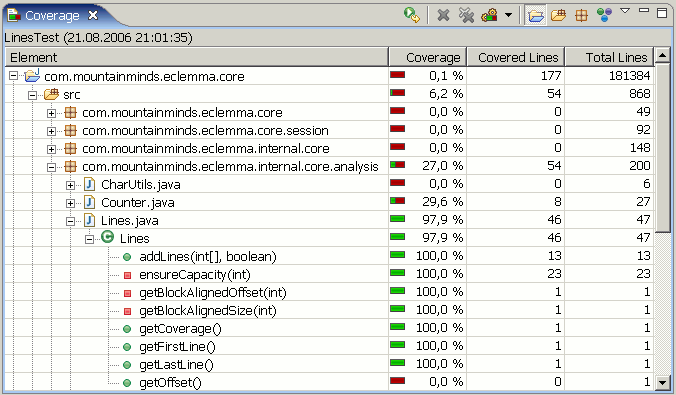

The coverage view automatically appears when a new coverage session is added or can manually be opened from the Window → Show View menu in the Java category. It shows all instrumented Java elements within the common Java hierarchy. For each element the total number of items and the number of items covered within the active session is shown, always including the child elements of the respective Java element. The view allows to switch between the number of bytecode instructions, basic blocks and lines.
The elements may be re-ordered by clicking the respective column header. Double-clicking an element opens its declaration in an editor.
The coverage view's toolbars offers the following actions: